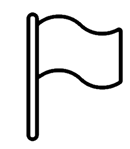

Találd meg az összes aknát a pályán, vagy fedd fel az összes akna mentes mezőt! Logikai következtetés alapján döntsd el, mely mezők biztonságosak, és melyek rejthetnek bombát.
A pálya alatt egy kazetta ikon található. Erre kattintva elindítható vagy megállítható a háttérzene.
A játékot kétféleképpen nyerheted meg: